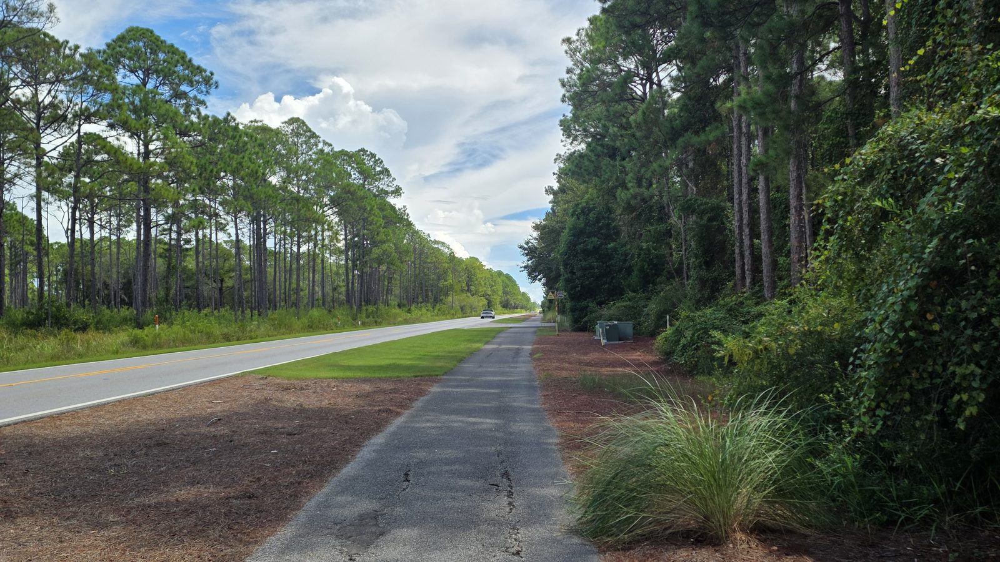

Understanding the South Walton Connector Road Project

If you've heard people talking about the South Walton Connector Road, you may be wondering: What exactly is it, where would it go, and is it still happening?
Walton County has studied an additional north-south connection between Scenic Highway 30A and US 98 for years. The formal Project Development & Environment (PD&E) study evaluated several alternatives and considered traffic congestion, emergency response and evacuation, multimodal transportation, environmental impacts, and public input.
What Was Proposed?
In 2023, Walton County identified Alternative D2 as the preferred alternative from the first phase of the study.
D2 proposed a new two-lane north-south roadway between CR 30A and US 98, with 11-foot travel lanes and a 12-foot multi-use path within approximately 150 feet of right-of-way. The proposed corridor would pass through portions of Point Washington State Forest.
Importantly, identifying D2 as the preferred alternative did not mean the road was approved for construction.
What Happened Next?
The County's April 2023 materials stated that Phase I of the PD&E study was ending and that Phase II could begin when funding became available. Phase II would include updated project data, additional public involvement, agency coordination and environmental mitigation work.
Walton County later programmed $350,000 for Phase II in FY2026, but that funding was not carried forward into the County's subsequent Five-Year Work Plan.
As of 2026, the South Walton Connector is not listed among Walton County's active engineering projects.
The Big Question
The transportation issue that originally led to the study hasn't disappeared. Neither have concerns about putting a new roadway through environmentally sensitive public land.
That raises an important question for South Walton:
Could an additional connection between 30A and US 98 improve mobility and emergency access while also permanently protecting Point Washington State Forest from development along the corridor?
That's one of the questions this website is intended to explore.
We'll be publishing the original maps, County documents, project timeline, environmental concerns, proposed protection concepts, and community perspectives so residents can review the information and reach their own conclusions.
Have an opinion? Take the community survey and tell us what you think.